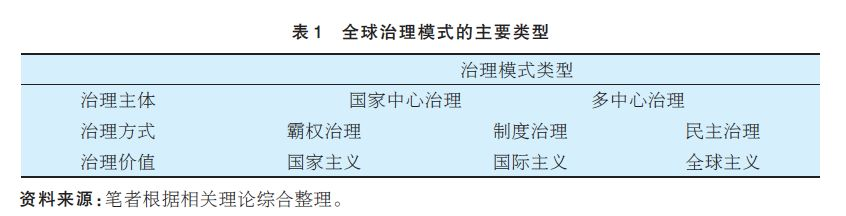

收录于合集
简
石晨霞
上海国际问题研究院助理研究员
摘要
2008年全球金融危机以后，全球治理模式转型成为国际社会的热点问题。在国际权势转移、治理失灵以及全球治理自身不断演进的背景下，国家中心主义治理模式难以为继，因此推动全球治理模式的转型显得必要且迫切。本文在借鉴不同治理理论的基础上，提出全球治理模式应该向多元多层协同治理的方向转型。具体的转型路径包括：推动治理主体的多元化、治理机制的改革与完善、治理理念的创新以及治理体系的互动。
关键词
全球治理 治理模式转型
国家中心主义治理 多元多层协同治理
全球治理及其模式转型
关于全球治理的概念，可谓仁者见仁、智者见智，始终未形成统一认识。目前，学者们使用最多的全球治理概念仍然是全球治理委员会提出的“治理是各种各样的个人、团体处理其共同事务的总和。它是一个持续的过程，通过这一过程，各种相互冲突和不同的利益可望得到调和，并采取联合行动”。
全球治理模式则是对某种或某一阶段的全球治理的治理主体及其关系、治理方式、价值取向等治理要素不同特点的概括与总结，它是区别不同治理的根本标志。（具体类型见表l）

事实上，一定时期的治理模式往往是治理主体、治理方式、价值目标等要素的不同组合与搭配，而且现实中的全球治理往往是某几种治理模式的混合形式或处于某几种治理模式的过渡状态，并不能非常明确地加以确定。例如，二战结束后的半个多世纪，全球治理模式多属于国家中心的霸权治理，并在价值方面强调国家主义，而随着冷战的结束，全球化的深化以及非国家行为体的崛起，全球治理模式逐渐从国家中心的霸权治理转向国家中心的制度治理，在价值方面强调国家主义向国际主义过渡。
本文所探讨的治理模式转型，就是指从 2008 年金融危机以来，全球治理在新的形势下表现出的新趋势和新特点，反映在具体方面就是：在治理主体上，单纯以主权国家为中心的治理，在以经济、气候、移民、卫生等为代表的低政治领域的治理已经无法客观反映全球治理的现实，也在治理实践中无法有效应对各类问题，因此需要真正推动非国家行为体的有效参与并发挥作用 。 当然，多中心治理并不排斥主权国家，也不否定主权国家的地位与作用，只是强调在主权国家之外，引人更多元的行为体，强调多元行为体与国家之间的关系更趋于平衡。 在治理方式上，此次转型主要体现为量变，而非质变，仍然是制度主义治理，但是治理机制本身要有所更新，以更好地反映现实世界的变化。在治理价值上，此次治理模式转型强调从国际主义治理向全球主义治理的过渡 。 因为国际主义对应的是各国利益的加总，而全球主义对应的是全人类的福社。目前的全球治理不同于大国协调，就在于其不单以国家为出发点，而是将人类诉求作为善治的考虑。综合来看，笔者认为，当前的全球治理模式表现出从国家中心主义的制度治理（以下简称“国家中心主义治理”）向多中心制度治理（以下称多元多层协同治理过渡的趋势。
多元多层协同治理模式具备以下几个特征：第一，权威的分散化 。 一是权威在西方发达国家与新兴国家之间的扩散；二是权威在国家行为体与非国家行为体之间的扩散；三是权威在国家层次与国际组织层次以及次国家层次之间的扩散。 第二，治理体系的多层互动 。 多元多层协同治理模式在治理体系方面主要涉及国际层次、国家层次、次国家层次，上述这些层次都具有不同的优势和特点，也分别从宏观、中观、微观等层面影响着治理结构和进程。另外，治理体系的互动还包括不同议题领域的相互渗透与交叉。 第三，以平等、有效、共赢为价值目标 。 多元多层协同治理模式强调主体之间地位的平等、权利的对等；同时，更关注治理效果的实现，尤其是在目前全球治理绩效不佳的情况下，如何使治理有效、有价值变得更为重要。最后，强调以实现共同利益为目标，推动合作共赢。 第四，强调协同增效的合作方式 。 多元多层协同治理模式在治理方式上非常重视各类主体的功能划分与优势互补，充分发挥各类、各层次治理主体的比较优势。现实中，权势、知识和资源往往被不同的治理主体所掌握，而治理效果的实现必须依靠多种资源，因此需要各类治理主体的协作，来实现资源的交换，进而实现整体大于部分之和的效果。 第五，以制度化建设为主要内容 。 新型的治理模式还要求在治理机制方面的健全和规范，改变目前治理机构松散、庞杂、低效的状态，真正实现高效、互动、协同、规范的治理结构和体系。
全球治理模式转型的原因和动力
（一）权势转移
全球治理模式不仅反映了参与治理的行为体（主要是指主权国家）之间的权力关系，也反映了各行为体对规则、规范和法律的自觉遵守。由此可见，行为体之间的权力关系变化也必然体现在全球治理模式的变迁中。学界目前普遍认同2008年的全球金融危机加速了主要国家行为体之间的权势转移，即冷战结束后的“一超多强”权力格局出现了一些微调，同时美国的“单极时刻”在危机的冲击下也难以为继；而一些新兴国家逐渐崛起，这主要以中国、印度、巴西等金砖国家为主要代表，它们的实力和影响力逐渐提升，要求在国际社会有更大的发言权和话语权。由此，国际权势出现了从以美国为主的发达国家逐渐向少数新兴国家适度转移的趋势。另外，权势转移还在另一个维度上进行，即从国家行为体向非国家行为体的扩散。这集中体现在对各类发展问题的治理上，包括气候变化、国际援助、联合国2030 年发展议程等，大量的非国家行为体参与其中，并能够实质性地影响治理进程，成为特定议题领域分享权势的主体。由此，这也成为观察国际权势转移的另一个视角。
这些变化趋势要求全球治理模式做出相应地调整，即对传统的以少数几个国家为中心的治理模式的改革与超越。 一方面，全球治理模式要体现新兴发展中国家群体性崛起的事实，这要求对既有的治理机制进行相应地改革与调整，国际货币基金组织和世界银行的投票权改革即是例证。另一方面，全球治理模式要有新的创新和突破，以适应权势转移背景下新兴发展中国家的利益诉求。这主要体现在治理新机制的创设与扩充方面，金砖国家新开发银行、亚洲基础设施投资银行（ AIIB ）的建立就是例证 。 当然，这两种新的变化并不是对原有治理体系的颠覆，而是对其的扩展与完善，使其更具代表性，也更能反映国际权势转移的发展趋势。另外，要重视和尊重非国家行为体的地位和价值。在机制的改革或创设过程中，重视非国家行为体的意见表达与合理利益关切，并保障其合作渠道的通畅。
当然， 关于权势转移，还需要特别指出的一点是，尽管在 2008 年金融危机之后，国家主义强势回归，非国家行为体特别是非政府组织所掌握的权势受到削弱，但是这并不能影响我们对国际权势从国家行为体向非国家行为体扩散的趋势的判断 。 一般而言，危机往往会极大激发国家主义的回归，因为在危机面前，国家是应对危机、解决问题最直接、最高效的行为体，也是国家最本能的选择。但是国家主义的回归在当今时代背景下可能还是暂时性的、应急性的，总体的发展趋势仍然是国际主义或全球主义。此外，对于非国家行为体分享权势的状况，还要区分不同的治理领域，在传统的权势集中度较高、技术门槛较高的领域，如国际安全、外太空治理中，非国家行为体很难分享权势；而在权势集中度较低、技术门槛较低的领域，如全球发展领域、各类非传统安全问题上，非国家行为体分享权势的程度就高一些。
（二）治理失灵
“全球治理失灵是指国际规则体系不能有效管理全球事务，不能应对全球性挑战，致使全球问题不断产生和积累，出现世界秩序失调的状态。”治理失灵也成为全球治理模式转型的外在动力和主要原因。一种机制均有其自身的发展周期，这从机制的有效性方面可以体现，即从强有效性到弱有效性再到失效的过程。当然，在这个过程中也伴随着机制自身的更新与调整。现有的全球治理机制多产生于20 世纪中叶以后，包括经济、安全、环境等领域的治理机制都经历了数十年的发展，它们在推进全球治理实践、为应对全球性问题作出了巨大贡献。但是，世界的飞速发展、信息化时代催生的多样化问题早已超越了数年前建立的治理机制的承载能力，使其变得捉襟见肘。这集中体现在目前各类全球性问题的治理失灵方面。
在经济方面，2008 年爆发的金融危机及其随后的治理可以认为是一个治理失灵的典型案例。危机发生后，现有的全球经济治理机制无计可施，各国纷纷“各扫门前雪”，无法组织起有效的应对措施。但是全球性的危机必然要求全球性的合作，此后西方国家不得不匆匆求助于吸纳了数个新兴发展中国家的二十国集团（G20）来共同应对危机。在气候变化问题上，虽然国际社会在过去的四十多年中作了多次努力，试图将温室气体的排放量加以控制并逐渐减少，尽量到21 世纪末实现2 摄氏度的温控目标，但是从目前的减排情况来推算，这一目标恐难实现。这也暴露了气候变化治理失灵的现实。尽管2015 年底在巴黎气候大会上通过的《巴黎协定》是一份全面、均衡、有力度、有法律约束力的协议，这为全球气候治理注入了新的活力和动力，但是后期的落实行动以及相关的资金问题仍将会困扰气候治理，单纯从治理效果和长远的温控目标来看，气候问题面临的挑战仍然十分严峻。另外，在全球反恐问题上，治理失灵的情况更为明显。“9·11”事件震惊世界，从那时开始，国际社会就在孜孜不倦地进行全球反恐治理，但是十多年过去了，恐怖主义问题似乎是“越反越恐”，近两年频繁发生的恐怖事件就是例证。
（三）全球治理自身的发展
全球治理无论是作为一种理论还是实践，它本身也在经历发展演进的过程。随着全球治理实践的发展以及各领域全球性问题的凸显，全球治理也在不断地适应新的变化，调整治理的方式和路径。具体而言，全球治理的发展演进，主要表现在治理主体日益多元、治理对象和治理领域逐渐扩展、治理规制不断细化和多样化、治理理念更具包容性等。这些方面的发展变化必然要求在治理模式上有所体现，因此治理模式的转型也势在必行。例如，在全球气候治理中，国际社会逐渐改变过去一直坚持的“自上而下”的治理模式，在2015 年的《巴黎协定》中最终确立了“自下而上”的治理模式，这无疑是在对过去数十年治理实践反思与总结的基础上，在治理思路上的一次重要转变。另外，随着全球性问题的日益多样化，相应的治理机制也逐渐多样，在传统的以政府间国际组织（以联合国、国际货币基金组织、世界银行以及世界贸易组织等）为主的正式的治理机制之外，逐渐出现一些非正式的治理机制，包括二十国集团、金砖国家、APEC 等。这些非正式的治理机制多以论坛形式出现，组织松散、没有章程约束、没有固定的组织机构，这与传统的治理机制形成鲜明对比。但它们在组织的开放性与议题的开放性方面具有很强的优势，因此其未来具备一定潜力。全球治理本身的发展还表现在对公私伙伴关系（PPP）模式的引入，重视以市场因素来弥补政府的不足，并激发市场力量，从而形成良性的公私伙伴关系。随着非国家行为体的发展，它们在全球治理中的角色也在逐渐变化，从最初的以参与为目的逐渐转变为以发挥影响力为目的，所以其专业性与技术性日益增强，这使得它们在全球治理中的作用与价值也增强。在此背景下，国家（或政府）不得不在一些领域中主动谋求与这些组织或机构的合作，以期实现协同合作的效应。
全球治理模式转型的路径
鉴于现有的全球治理模式遭遇到种种问题与挑战，我们认为应该推动治理模式从国家中心主义治理向多元多层协同治理的方向转型。只有如此，才能从根本上提升治理的效果，突破现有的治理困境，更好地适应国际体系的现实发展，切实促进人类共同利益的实现。具体而言，主要从以下几种路径推动治理模式转型。
（一）促进治理主体的多元化
多元多层协同治理模式在主体方面强调权威的分散化，所谓权威分散，一方面是指治理权威在主权国家之间的分散，另一方面是指权威在国家行为体与非国家行为体之间的分散 。 现有的国家中心主义治理模式往往强调主权国家的绝对权威，它的极端形式是霸权治理，即将单个或少数国家确立为单一权威，负责整个治理体系的运转和实践。诚然，这种权威集中的治理模式在过去很长时间内是有效的，它是与单极或两极世界格局相适应的，因此也取得了很好的效果。但是，随着国际格局的多极化发展与全球化深化，单纯的国家权威已经无法为多样且复杂的世界提供有效的治理。需要引入更多元的行为主体，既包括非西方国家或发展中国家的成员，也包括非国家行为体，如非政府组织、公民社会、企业、科学家团体、私人团体甚至个人等各类治理主体。
另外，更为重要的一个问题是如何处理各类主体之间的关系，这是决定治理模式能否成功转型的关键。 在各类治理主体的关系中，其中最主要的是两对关系，一是传统的西方国家与新兴发展中国家，二是国家行为体与非国家行为体；处理第一对关系的重点是传统西方国家与新兴发展中国家的权力与资源的共享、地位的平等与相互尊重；处理第二对关系的重点是国家行为体与非国家行为体在功能领域的优势互补以及地位上的认可 。
由此可见，第一对关系决定了新型的全球治理模式不可能彻底摆脱国家主义的窠臼，也不必要彻底否定国家的作用，越是在国家主义的弊端显现充分的时候，越是要客观理性地看待国家的作用， 金融危机之后全球治理中国家主义的回归恰恰说明国家仍是全球治理的根基，我们探讨的新模式只是在尽力弥补国家主义的不足，因为彻底否认国家既不合理也不现实 。 同时，处理第一对关系更要看到国家主义的变化，即更多的、能代表不同利益的国家能够参与全球治理，而且国家之间的关系更加平等、均衡、相互尊重。
第二对关系决定了新型全球治理模式主体多样化的特点，这既是对国家中心主义的超越，也是对现实多元利益群体利益的满足与尊重。随着现实中各类非国家行为体的成长与繁荣，全球治理的“私有化”与“非正式化”趋势也日益明显，因此吸收多元治理主体既是对治理实践的反映，也是对全球治理合法性的扩展。另外，第二对关系所涉及的治理主体更强调双方在治理功能、治理价值方面的优势互补与相互配合，这一点显著区别于第一对关系。
（二）推动治理机制的改革
治理机制既是全球治理的核心要素，也是将各类主体联系起来的纽带，因此如何推动治理机制的完善和创新是实现全球治理模式转型的关键环节。目前关于全球治理机制的讨论主要集中在两个方面：
第一，在现有治理机制的基础上，进行适度调整与完善，改善目前治理机制松散、庞杂、低效的状态，真正实现高效、互动、协同和规范 。 首先，目前全球治理普遍存在的问题是机制众多、互相缺少合作与互动，以及机制的老化问题。因此，在全球治理模式转型过程中，要在整合现有机制、提高机制的有效性方面多做工作。其次，改革现有的全球治理机制，例如在气候治理方面，国际社会探索的国家自主决定贡献（INDCs）减排模式提高了各方的参与积极性和自觉性，从而开启了气候治理的新征程。此外，在全球经济治理方面，国际社会也在积极探索改革现有治理机制的代表性问题，世界银行与国际货币基金组织的投票权改革是一个体现，另外，人民币成为国际货币篮子的一员也显示出全球经济治理机制变得日益开放，这也是全球治理机制不断完善的体现。
第二，建设新的适应治理需要的机制和机构 。 鉴于全球治理实践的丰富与发展，而目前的全球治理机制在一些方面已经无法满足现实的治理需求，因此，创设新的治理机制是国际社会面临的重要问题。一方面，以亚投行和金砖国家新开发银行为代表的新的治理机制的创设，这是对传统的全球经济治理机制的补充，也能满足新兴发展中国家的合作需求，同时这些新的机制也具有很强的包容性和开放性，积极吸收发达国家的参与，能够真正实现共同发展。另一方面，治理机制的创新也体现在推动一些区域性机制和领域性机制的发展。近年来，区域治理的发展引人关注，如东盟峰会、上海合作组织、亚信峰会等地区治理机制在促进区域治理方面日益显现出各自的优势。因此，应该促进区域治理与全球治理的互动，使这些区域性或地区性机制的发展为全球性问题的解决奠定基础，也为全球治理提供更多的选择。最后，建立多样化的治理机制，现有的治理机制多以“自上而下”的“硬法”为基础，虽然具备一定的约束力，但往往治理效果不佳，因此，在治理机制的转型过程中，可以增加一些“软法”性质的机制，这样可以使治理机制更加灵活务实。
（三）实现治理理念的创新
促进治理理念的创新成为当前全球治理领域的热点问题，也是全球治理模式转型的重要方面。多元多层协同治理模式也有独特的理念和价值目标，即实现平等、有效、共赢的全球善治。首先是强调主体之间地位的平等、权利的对等、身份的相互尊重；其次，从治理的效果方面看，强调治理的有效性；最后，以实现共同利益为目标，推动合作共赢。
另外，上述这些理念、价值是对传统治理观念的变革。 一方面，以往的全球治理理念多以西方发达国家为中心，强调西方的优势地位、西方价值的优越性、理念的先进性，往往忽视整个治理体系中不同国家和实体的价值需求，而且这种治理体系在思想理念方面具有很强的封闭性，因此很难融入新的更具民主色彩的理念 。 但现实的国际社会已经发生了变化，非西方的价值、思维、观念也需要有相应的体系来加以容纳，这就需要全球治理体系有更好的包容性和开放性。 另一方面，以往的全球治理多以处理国家间关系的理念为基础，如强调国家之间“谁支配谁、谁领导谁”的理念、零和博弈观念、强调国家间的冲突和对立思维等这些有着浓厚的现实主义国家间政治的意味，这显然也与现实的全球治理相去甚远，正如秦亚青教授指出的“用治理国家间关系的思想、秩序原则和制度安排来治理全球性的国际社会，就会表现出面对挑战无能为力的局面 。
（四）加强治理体系的互动
全球治理的实现并非单一层面上的运作，全球、区域、国家乃至公民个人都是实现全球治理过程中的重要环节和组成部分，因此多元多层协同治理模式在体系维度主要涉及国际层次、国家层次以及次国家层次，这些层次都具有不同的优势和特点，也分别从宏观、中观、微观等层面影响着治理结构和治理进程。当然，治理体系中的层次内部以及不同层次之间并非相互完全孤立，而是相互补充、互为影响因素，并形成层次比较分明的多极治理链。另外，从横向上来看，议题领域的相互交叉与渗透也是体系互动的重要内容。因此不仅要加强各个层次的互动与合作，也要重视相关议题领域的互动与交流，从而实现治理体系的互动和动态发展。
国际层次以联合国及其相关机构、其他国际组织为主要代表，它们推动国际共识的达成且确立宏观的治理目标和主要原则，并在协商的基础上确立基本的责任与义务。这一层次的功能主要以宏观的指导和调控为特点。国家层次主要以主权国家落实协议为主要任务，其中包括履约的战略制定、相关政策、行业政策、法律法规的制定、部门协调等各项内容，整体上从中观层次指导并监督国际协议的执行。次国家层次以地方政府为主，同时企业、媒体、公民个人等也是构成要素，它们以具体的政策执行为主要任务，是全球治理的直接操作层面，也直接影响着治理效果。三个层面的各自职能和功能是比较明确的，但是实际的治理实践则需要各个层次的相互沟通、协调、互动。整体治理过程既有明确的层次的分界和职能划分，同时又在互动的基础上构成一个动态的治理体系，共同推动治理进程的发展。因此，多层互动是治理模式转型的重要方面。另外，需要指出的是，上述几个层次在互动的过程中，还需要对各层次主要行为体的角色进行明确的定位，并不断提升其治理能力，如此才能实现有效的层次互动。
结语
全球治理模式从国家中心主义治理向多元多层协同治理的转型，不仅是对全球治理现实的反映，也是全球治理不断走向深入的表现；不仅有利于推动全球治理朝着更加民主、公正、包容的方向发展，也将推动治理体系逐渐实现动态、良性发展；不仅将提升全球治理的有效性，也将提升整体治理的协同效应。当然，全球治理模式转型也面临许多不确定因素，一方面，主权国家对国家中心主义的坚守很难在短期内改变，这需要观念认知方面的逐渐转变；另一方面，非国家行为体的发展目前也存在官僚化、民主赤字等问题，而且很多有影响力的非政府组织往往属于西方发达国家，难免会受到这些国家的影响。这些因素决定了治理模式的转型将是一个渐进的、长期的过程，不可能一蹴而就。 （注： 文章有删减，详细内容请参看原文。）
文章来源： 《东北亚论坛》2016年第4期
筛选：ササ 编辑：ササ 里仝